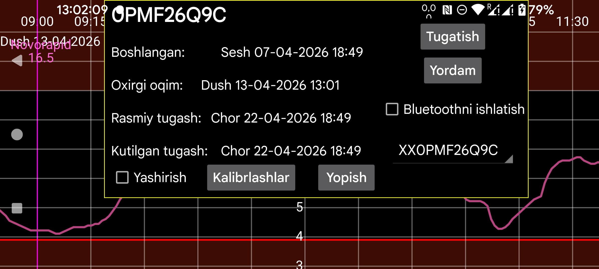

Bu sahifa Juggluco oqim qiymatlari uchun mirror vazifasini bajarayotganda sensorlar haqida ma’lumot ko‘rsatadi.
Boshlangan: sensor ishga tushirilgan vaqt. Libre sensorlarida bu odatda birinchi glyukoza qiymatlaridan bir soat oldingi vaqt bo‘ladi.
Oxirgi skan: sensor oxirgi marta qachon skan qilingani. Hatto sensor xatosi yoki replace sensor xatosi sababli ma’lumot olinmagan bo‘lsa ham, skan qilingan deb hisoblanadi.
Oxirgi oqim: Bluetooth orqali olingan eng so‘nggi glyukoza o‘lchovining vaqti.
Rasmiy tugash: ishlab chiqaruvchi ko‘rsatgan tugash vaqti.
Kutilayotgan tugash: ayrim sensorlar amalda rasmiy muddatdan uzoqroq ishlaydi. Libre 1, Libre 2 va Dexcom G7/ONE+ odatda yana 12 soat, Sibionics sensorlari esa deyarli 10 kun ko‘proq ishlashi mumkin. Libre 3 esa odatda rasmiy muddatidan oshmaydi.
Yashirish: belgilansa, shu egri chiziq yashiriladi. Qayta ko‘rsatish uchun belgini olib tashlash mumkin yoki ekran pastki o‘ngidagi Ko‘rsatish tugmasini bosish mumkin.
To‘xtatish: shu sensordan Bluetooth orqali glyukoza olishni to‘xtatadi. Keyin yana ishlatmoqchi bo‘lsangiz, sensorni qayta skan qilish kerak bo‘ladi.
Bluetoothni ishlatish: shu qurilmani sensorlar bilan to‘g‘ridan-to‘g‘ri Bluetooth orqali bog‘laydi. Bu bilan qaysi qurilma sensor bilan bevosita ulanayotganini almashtirish mumkin. Oldin sensor bilan bevosita bog‘langan boshqa qurilmada bu parametr o‘chirilgan bo‘lishi kerak. Bundan tashqari, ikki qurilmadagi Mirror sozlamalarini ham shunday o‘zgartirish kerakki, Oqim qiymatlari qarama-qarshi yo‘nalishda yuborilsin. Agar qarshi tomonda Wear OS soati bo‘lsa, buni bitta tugma bilan bajarish mumkin: chap menyu→Watch→Wear OS sozlash→Soatning sensor bilan to‘g‘ridan-to‘g‘ri ulanishi.
Agar bir vaqtning o‘zida bir nechta sensor ishlatilayotgan bo‘lsa, ma’lumot qaysi sensor uchun ko‘rsatilishini shu yerda tanlash mumkin.
Kalibrlashlar: agar chap menyu→Sozlamalar→Kalibrlash bo‘limida qon glyukozasi yorlig‘i ko‘rsatilgan bo‘lsa va chap o‘rta menyu→Yangi miqdor orqali chiqarib tashlanmagan qon glyukozasi o‘lchovlari kiritilgan bo‘lsa, Kalibrlashlar tugmasi bosilganda bajarilgan kalibrlashlar ro‘yxati chiqadi. Batafsil: https://www.juggluco.nl/Juggluco/index.html#calibration.
Isinish: Sibionics va Aidex X sensorlarida isinish davrining daqiqalar sonini o‘zgartirish mumkin. Isinish davridagi ma’lumot barcha funksiyalar tomonidan e’tiborga olinmaydi: ekrandagi grafik, statistika, eksport qilingan ma’lumot va veb serverda ko‘rinadigan ma’lumot ham. Bu orqaga qarab ham qo‘llanadi.